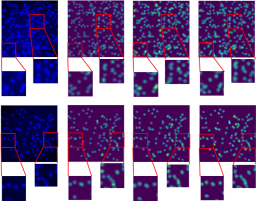
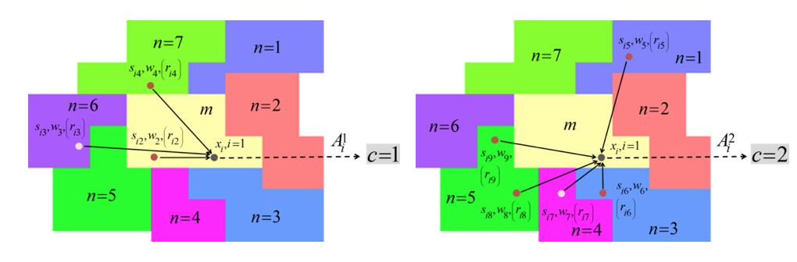

Research
Tensor Analysis
Low-Rank Tensor Decomposition Models for Image Segmentation (JA-CNN, LRSD_SS)
Novelty: jointly representing multidimensional low-rank features
Application: change detection (CD) in multitemporal hyperspectral images
Publications:
-
Zhao Chen, Bing Wang*. Spectrally-spatially regularized low-rank and sparse decomposition: a novel method for change detection in multitemporal hyperspectral images. Remote Sensing. 2017, 9 (10), 1044: 1-21（SCI, EI).
-
Zhao Chen*, Feng Zhou. Multitemporal hyperspectral image change detection by joint affinity and convolutional neural networks. MultiTemp 2019 (EI).
JA-CNN
LRSD_SS
Tensor Networks for Image Classification and Regression (TCNN)
Novelty: the network layers are constructed by tensor decomposition models, being able to recognize low-rank patterns as well as representing deep features
Application: cyclone intensity estimation with meteorological remote sensing images
Publications:
-
Xingxing Yu, Zhao Chen* , Guangchen Chen, He Zhang. A tensor network for tropical cyclone wind speed estimation. IGARSS 2019 (EI).
-
Zhao Chen*, Xingxing Yu. A novel framework based on tensor networks for tropical cyclone intensity estimation. IEEE Transactions on Geoscience and Remote Sensing (undergoing major revision).
An Architecture of the Proposed Tensor Networks (C-TCNN)
Convergence Curve

Feature Maps
Weakly Supervised Learning
A Weakly Supervised Network for Image Segmentation (WESUP)
Novelty: learning hierarchical features regularized by deep label propagation
Advantage: only using very sparse manual annotations
Application: histopathology image segmentation/ histology object detection
WESUP
Data Sets: GlaS3, CRAG7 and LUSC (In-House) Weakly Supervised
Methods for Comparison: CDWS-MIL8 and SizeLoss9
Segmentation of a PD-L1 Whole Slide Image
(In-House PD-L1 Slide)
Manifold Learning
A Manifold Regularized Regression Network for Object Counting (MRRN)
Novelty: combining regression and manifold learning based on a pre-trained deep network
Advantage: performing counting and localization simultaneously
Application: histopathology/ biomedical object counting and localization
MRRN

Bacteria Counting
(Synthetic Data)
Cancerous Cell Counting
(In-House PD-L1 Slides)
Classification based on Affinity Scoring
Novelty: exploiting local consistency, spectral variability and prior knowledge simultaneously by affinity scoring; being able to be adapted to supervised or semisupervised classification
Application: spectral-spatial classification for hyperspectral images
Publications:
-
Z. Chen and B. Wang, “Semisupervised spectral-spatial classification of hyperspectral imagery with affinity scoring,” IEEE Geoscience and Remote Sensing Letters. vol. 12, no. 8, Aug. 2015, pp. 1710-1714.
-
Z. Chen and B. Wang, “Spectral-Spatial Classification Based on Affinity Scoring for Hyperspectral Imagery,” IEEE J. Sel. Top. Appl. Earth Observ. Remote Sens.
-
Z. Chen and B. Wang, “Spectral-spatial classification for hyperspectral imagery: a novel combination method based on affinity scoring,” SCIENCE CHINA Information Sciences


An example of affinity scoring
From left to right: oversegmentation by SLIC, SVM classification (OA = 79.08%), SLIC + CRAS classification (OA = 96.17%) and SLIC + SCAS classification (OA = 97.02%) when only 5% samples are used for training
Subtensor-based Lower Rank Tensor Analysis
Novelty: leveraging local consistency by subtensors and representing low-rank features by tensor decomposition
Application: semisupervised spectral-spatial classification for hyperspectral images
Publications:
-
Z. Chen, B. Wang and L. Zhang, “Dimensionality reduction and Classification based on lower rank tensor analysis for hyperspectral imagery,” Journal of Infrared and Millimeter Waves, vol. 32, no. 6, 2013, pp. 569-575.
From left to right: false RGB and ground truth of Indian Pines HSIs
Outcomes of S-LRTA with difference subtensor sizes. From left to right: 2×2, OA=99.74%; 6×6, 98.82%; 10×10, 92.37%
A General Framework for Image Fusion
Novelty: exploiting similarities between panchromatic/multispectral image (Pan/ MSI) fusion and multispectral /hyperspectral image (MSI/ HSI) fusion; generalizing well-established Pan/ MSI fusion methods by spectral resampling and region-wise fusion
Application: multispectral /hyperspectral image fusion
Publications:
-
Z. Chen, H. Pu, B. Wang and G. Jiang, “Fusion of hyperspectral and multispectraln images : a novel framework based on generalization of pan-sharpening methods,” IEEE Geosci. Remote Sens. Lett., vol. 11, no.8, pp. 1418-1422, Aug. 2014.
Computational Intelligence and Multi-objective Optimization
High-dimensional Double-swarm PSO (HDPSO), Adaptive PSO(APSO), Multiobjective PSO(MOPSO)
Novelty: Improved PSO and advanced constraint handling strategies are combined for NMF-based spectral unmixing
Application: linear spectral unmixing for hyperspectral remote sensing images
Publications:
-
Bin Yang, Wenfei Luo, and Bin Wang, “Constrained nonnegative matrix factorization based on particle swarm optimization for hyperspectral unmixing,” IEEE J. Sel. Top. Appl. Earth Obs. Remote Sens., vol. 10, no. 8, pp. 3693–3710, Aug. 2017.
Nonlinear Spectral Unmixing I
Band-Wise Nonlinear Spectral Unmixing (BNLSU)
Novelty: wavelength dependent multiple scatterings and band-wise change of nonlinearity are accurately revealed for nonlinear spectral unmixing
Application: nonlinear spectral unmixing for hyperspectral remote sensing images
Publications:
-
Bin Yang and Bin Wang, “Band-wise nonlinear unmixing for hyperspectral imagery using an extended multilinear mixing model,” IEEE Trans. Geosci. Remote Sens., vol. 56, no. 11, pp. 6747–6762, Nov. 2018.

Nonlinear Spectral Unmixing II
Geometric Characteristics of the BMMs Based Abundance Estimation (GCBAE)
Novelty: the issue of collinearity is addressed by constructing a nonlinear vertex; geometric projection-bias correction is carried out for accurate abundance estimation under the FM, GBM, and PPNM.
Application: nonlinear spectral unmixing for hyperspectral remote sensing images
Publications:
-
Bin Yang, Bin Wang, and Zongmin Wu, “Nonlinear hyperspectral unmixing based on geometric characteristics of bilinear mixture models,” IEEE Trans. Geosci. Remote Sens., vol. 56, no. 2, pp. 694–714, Feb. 2018.
Nonlinear Spectral Unmixing III
Hypergraph and Fuzzy-Assessment Based Nonlinear Endmember Extraction (HFNEE)
Novelty: Hypergraph and Fuzzy-Assessment Based Nonlinear Endmember Extraction (HFNEE)
Application: nonlinear spectral unmixing for hyperspectral remote sensing images
Publications:
-
Bin Yang, Zhao Chen, and Bin Wang, “Nonlinear endmember identification for hyperspectral Imagery via hyperpath-based simplex growing and fuzzy assessment,” IEEE J. Sel. Top. Appl. Earth Obs. Remote Sens., vol. 13, no. 1, pp. 351–366, Jan. 2020.